02 Bipolar Junction Transistors
BJT
A transistor is a semiconductor device used to amplify or switch electronic signals and electrical power. It is composed of semiconductor material usually with at least three terminals for connection to an external circuit.
Bipolar Junction Transistor constructed with three doped Semiconductor Regions
(Base, Collector, and Emitter) separated by two p-n Junctions.
Emitter, Collector, and the Base is the correct order of decreasing impurities. Doping is the intentional introduction of impurities into an intrinsic semiconductor for the purpose of modulating its electrical, optical and structural properties.
Bipolar junction transistors have three terminals and they are Base (B), collector
(C) and emitter (E).
Bipolar (because conduction is due to two opposite type of carriers Holes
𝐵= and electrons) J = Junction refers to the two PN junctions between emitter and base, and collector and base.
BJT's are current-driven devices i.e. It is a current-controlled device. The current through the two terminals is controlled by a current at the third terminal (base).
It is a bipolar device (current conduction by both types of carriers, i.e. majority and minority electrons and holes) It has a low input impedance. Basically, the bipolar junction transistor consists of two back-to-back P-N junctions manufactured in a single piece of a semiconductor crystal.
These two junctions give rise to three regions called emitter, base, and collector.
As shown in Fig. junction transistor is simply a sandwich of one type of semiconductor material between two layers of the other type.
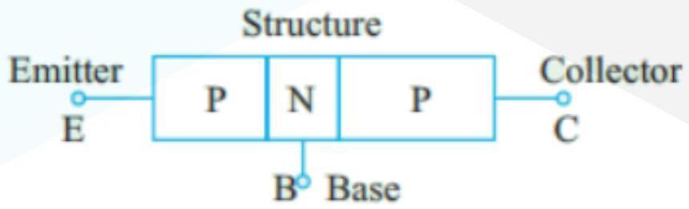
The emitter, base, and collector are provided with terminals that are labeled as E,
B, and C.
The two junctions are: emitter-base (E/B) junction and collector-base (C/B) junction.
- 1. Emitter It is more heavily doped than any of the other regions because its main function is to supply majority charge carriers (either electrons or holes) to the base.
- 2. Base It forms the middle section of the transistor. It is very thin (10-6 m) as compared to either the emitter or collector and is very lightly doped.
- 3. Collector Its main function (as indicated by its name) is to collect the majority of charge carriers coming from the emitter and passing through the base. In most transistors, the collector region is made physically larger than the emitter region because it has to dissipate much greater power.
Commonly used Notations in both NPN & PNP
3 No. of Impurity atom in emitter 𝑁 𝐸 = /𝑐𝑚 3 No. of Impurity atom in Base/cm 𝑁 𝐵 = 3 No. of Impurity atoms in collector 𝑁 𝐶 = /𝑐𝑚 The order of doping is 𝑁 𝐸 > 𝑁 𝐶 > 𝑁 𝐵 The order of width is W (collector) > W (emitter) > W (Base)
Types of BJT
The arrow on the symbol for bipolar transistors indicates the PN junction between base and emitter and points in the direction in which conventional current travels, i.e. the direction of holes.
NPN
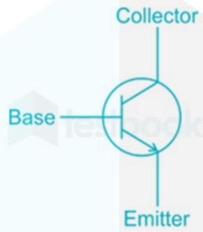
For an NPN transistor, when the emitter-base is forward biased, holes from the base (p-type) start to flow to the emitter side (n-type) and electrons start to flow from the emitter to the base. The direction, however, represents the direction of the hole flow.
PNP
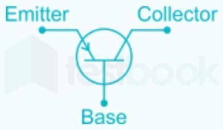
For a PNP transistor, when the emitter-base junction is forward biased, holes from the emitter start to flow to the base. The direction of the arrow also indicates the same.
Some of the notations used are as follows Collector current 𝐼 𝑐 = Emitter current 𝐼 𝐸 =
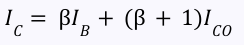
Where current gain of CE (common Emitter) β = Leakage current 𝐼 𝑐𝑜 = current gain of CB (common Base) α = Collector to Base current with Emitter open 𝐼 𝐶𝐵𝑂 = collector to Emitter current with Base open 𝐼 𝐶𝐸𝑂 = 𝐼 𝐶𝐸𝑂 > 𝐼 𝐶𝐵𝑂 > 𝐼 𝐶𝑂 𝐼 𝐶𝐸𝑂 = (β + 1)𝐼 𝐶𝐵𝑂
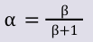
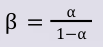
𝐵𝑉 𝐶𝐵𝑂 > 𝐵𝑉 𝐶𝐸𝑂 Breakdown voltage with Emitter open. 𝐵𝑉 𝐶𝐵𝑂 → Breakdown voltage with base open 𝐵𝑉 𝐶𝐸𝑂 →
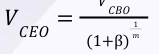
The order of is 𝑚 4 < 𝑚< 6
Transistor Configurations
Common collector configuration
The configuration in which the collector is common between emitter and base is known as CC configuration. In CC configuration, the input circuit is connected between emitter and base and the output is taken from the collector and emitter.

Common emitter configuration
The configuration in which the emitter is connected between the collector and base is known as a common emitter configuration. The input circuit is connected between emitter and base, and the output circuit is taken from the collector and emitter.
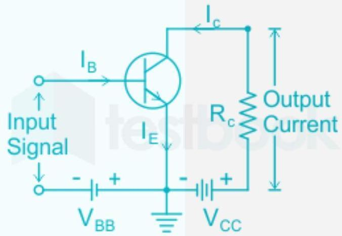
Common base configuration
The configuration in which the base of the transistor is common between emitter and collector circuit is called a common base configuration. In common base-emitter connection, the input is connected between emitter and base while the output is taken across collector and base.

Comparison
| Common Emitter (CE) | Common Collector (CC) | Common Base (CB) | |
|---|---|---|---|
| Input Current | 𝐼 𝐵 | 𝐼 𝐵 | 𝐼 𝐸 |
| Output Current | 𝐼 𝐶 | 𝐼 𝐸 | 𝐼 𝐶 |
| Current gain (A, ) | High 𝐼 β = 𝐶 𝑑𝑐 𝐼 𝐵 | High 𝐼 γ = 𝐸 = (1 + β ) 𝐼 𝑑𝑐 𝐵 | Low (unity) 𝐼 α = 𝐶 𝑑𝑐 𝐼 𝐸 |
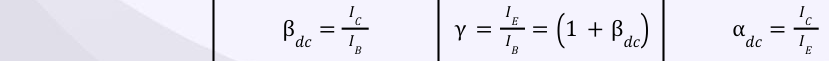
| Voltage gain | High | Low (unity) | High |
|---|---|---|---|
| Input resistance (𝑅 ) 𝑖 | Medium | High | Low |
| Output re- sistance (𝑅 ) 𝑜 | Medium | Low | High |
| Phase change | ◦ 180 | ◦ 0 | ◦ 0 |
Points to Remember
The three basic single-stage bipolar junction transistor which is used as a voltage amplifier is called CE amplifier.
The input (Vin) of CE amplifier is taken from the base terminal and the output
(Vout). is collected from the collector terminal The emitter terminal is common for both base and collector terminals and the input is applied across the emitter-base junction with the forward-biased this amplifies the signal.
Thus the base current is amplified by applying suitable input voltage across the base-emitter junction and we get amplified output voltage across the collector-emitter junction
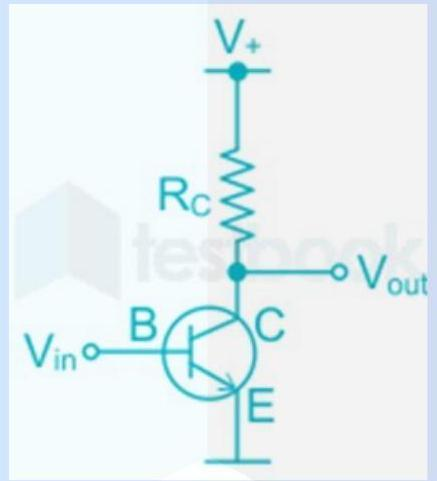
From the above explanation, we can see that, in common emitter configuration, the base current is amplified and we get an amplified output signal.
This configuration can be used as a switching circuit, in which by applying suitable base-emitter current the circuit can be switched on or off.
Hence when a transistor is used in a common emitter configuration the variation is output can be made by varying base current (i.e., by change base-emitter voltage).
CE Configuration Input and Output Characteristics
Input Characteristics
A graph showing the variation of the base current (IB) with base-emitter voltage (VBE), at constant collec-tor-emitter Voltage (VCE) is called input characteristics of a transistor.
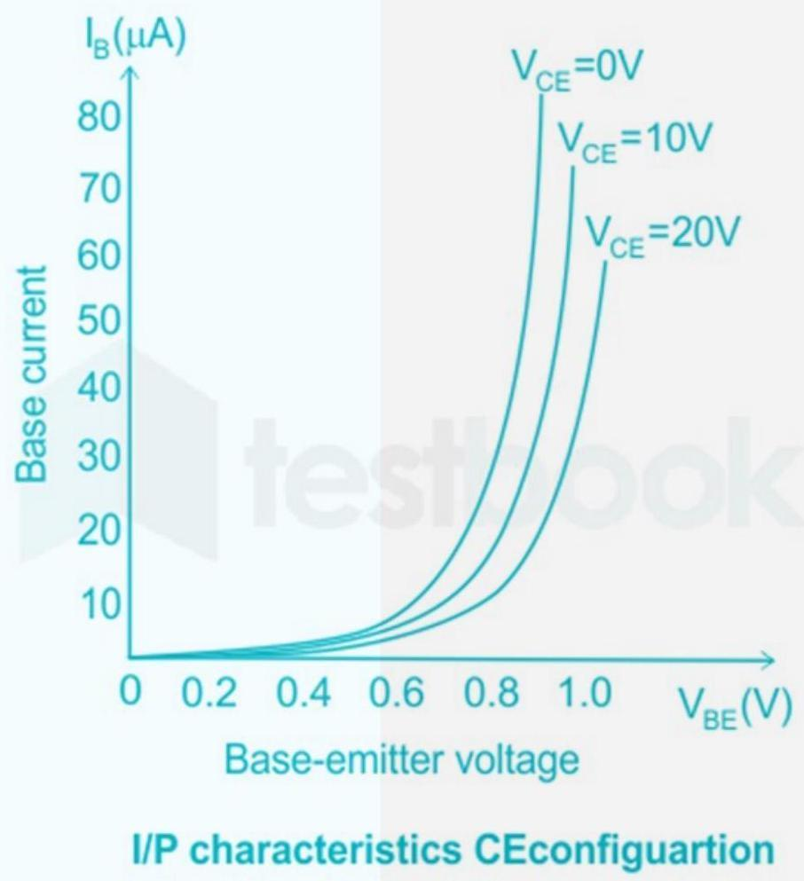
The input resistance () is defined as the ratio of the small change in the 𝑅 𝑖 () base-emitter voltage to the corresponding small change in base current
∆𝑉 𝐵𝐸 (), it is given by ∆𝐼 𝐵
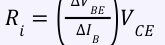
Output Characteristics
() A graph showing the variation of collector current with collector-emitter 𝐼 𝐶 () () voltage at a constant base current is called output characteristics, it is 𝑉 𝐶𝐸 𝐼 𝐵 given by

() From above it is clear that the input resistance is defined as the ratio of the small 𝑅 𝑖 change in the baseemitter voltage () to the corresponding small change in base ∆𝑉 𝐵𝐸 () 𝑉 𝐶𝐸 ∆𝑉 𝐵𝐸 () current, it is given by ∆𝐼 𝐵 𝑅 𝑖 = ∆𝐼 𝐵
Different modes of BJT operations
| Mode | Emitter -base Junction | Collector Base Junction |
|---|---|---|
| Cut off | Reverse | Reverse |
| Active | Forward | Reverse |
| Reverse Active | Reverse | Forward |
| Saturation | Forward | Forward |
V-I characteristics of a common-emitter configuration of BJT as shown:
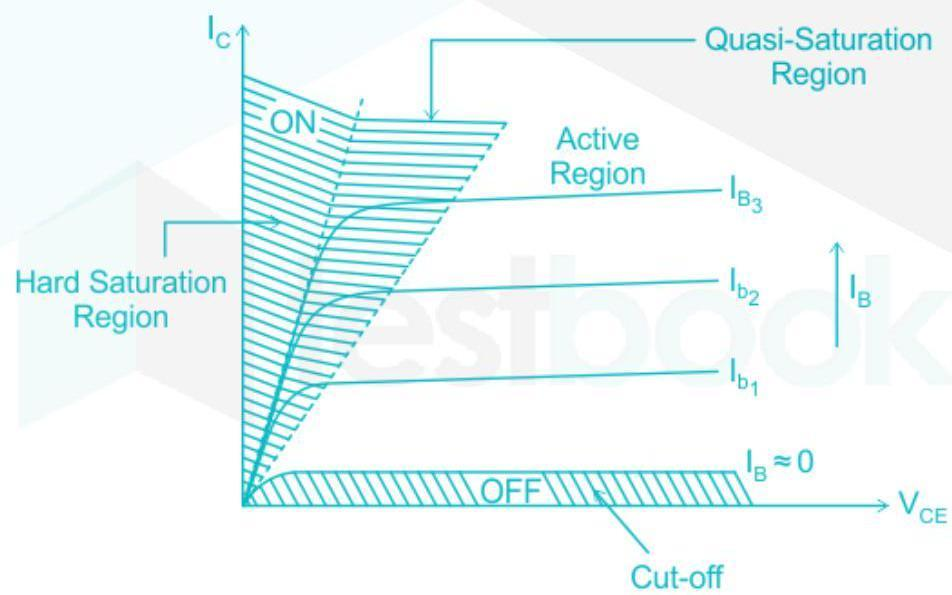
In the hard-saturation region, the ON time duration is more. The power dissipation occurs in large amounts as the current is maximum. In the cut-off region current is zero. So no power dissipation occurs in this region during the switchedmode operation of BJT.
The applications of BJT and the biasing conditions are shown below
| Region | 𝐽 𝐸 | 𝐽 𝐶 | RB |
|---|---|---|---|
| Forward active | FB | RB | Amplifier |
| Cutoff | RB | FB | OFF switch |
| Saturation | FB | FB | ON switch |
| Reverse active | RB | Attenuator |
BJT is never operated in the reverse active region The main application of the BJT is as an amplifier, and this is possible under small-signal conditions.
The characteristics of is as shown below: 𝐼 𝐶 −𝑉 𝐵𝐸
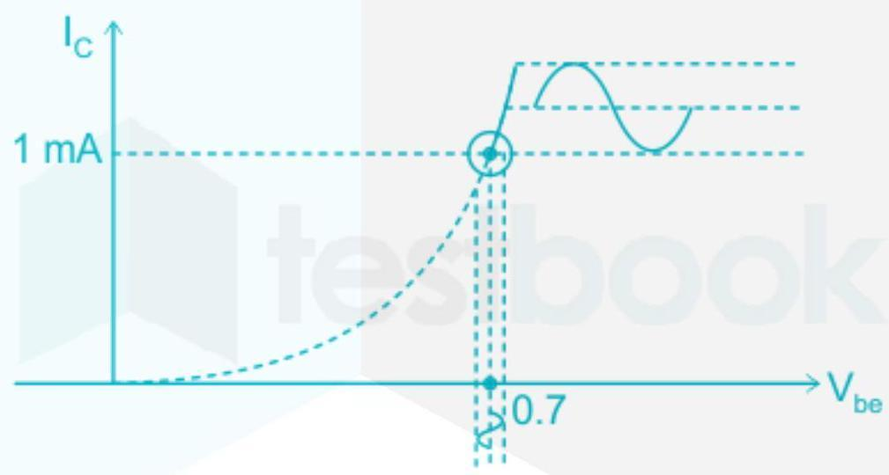
Current variations are linear in this region. Non-linear behavior becomes linear in that small region. DC operating point is needed so that we can apply the signal at that point to get the amplified signal.
The remaining applications of transistor i.e. ON & OFF switch are possible under the large-signal condition
Early effect
Due to forward bias, the base-emitter junction JE acts as a forward-biased diode and due to reverse bias, the collector-base junction JC acts as a reverse-biased diode.
If the output voltage VCB applied to the collector-base junction JC is further increased, the depletion region width further increases.
The base region is lightly doped as compared to the collector region. So the depletion region penetrates more into the base region and less into the collector region.
As a result, the width of the base region decreases. This dependency of base width on the output voltage (VCB) is known as an 'early effect'.
Thermal Runaway
Thermal runaway is a situation in which an increase in temperature changes the conditions in a way that further causes temperature to increase.
The minority current is a function of the junction temperature of the transistor. As the junction temperature increases, the minority current also increases. In BJTs the collector current dissipates a lot of heat, this increase in temperature causes increased flow of minority carriers from collector to base, further increasing the collector current.
This increase in collector current further raises the temperature, thus thermal runaway occurs ending in burnout of BJT.